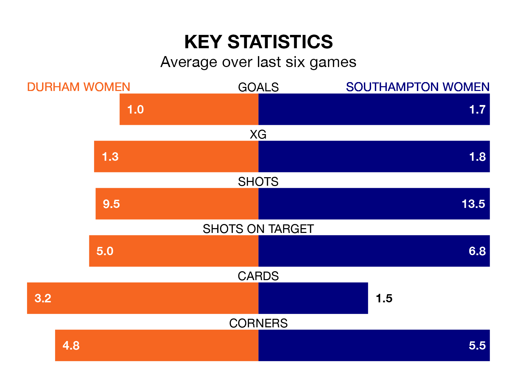

Southampton Women travel to Durham Women on Sunday lunchtime in the FA Women's Championship.
The visitors come into the game on the back of a win in their last match, having beaten Crystal Palace Women 4-3 away, with goals from Rianna Dean, Katie Wilkinson, Molly Pike and Ella Morris.
Durham, meanwhile, lost their last match, 3-1 against Birmingham City Women, with their goal scored by Eleanor Doyle.
With 21 goals in 11 games so far this season, Southampton are the league's second-highest scorers with 1.9 goals per game. And they are conceding fewer than average, letting in 14 goals at a rate of 1.3 per game.
Durham, meanwhile, are below average scorers, with 1.0 goal per game, compared to a league average of 1.4. They have conceded 1.8 goals per game.
The Saints are third in the table after 11 games, of which they have won seven and lost four, earning 21 points.
The hosts are four places behind the away team in seventh, with four wins and two draws putting them on 14 points.
In Pike, Sophia Pharoah and Wilkinson, Southampton have three of the league's most on-form strikers so far this season. They have notched four goals each, to sit sixth in the scoring charts.
Durham's top scorer, with three goals in 11 games, is Doyle.
Durham are in mixed form in the FA Women's Championship, with two wins and a draw from their last six games.
With four wins and two losses over that period, Southampton's form is better – they have taken 12 points from 18, compared to the home side's seven.
